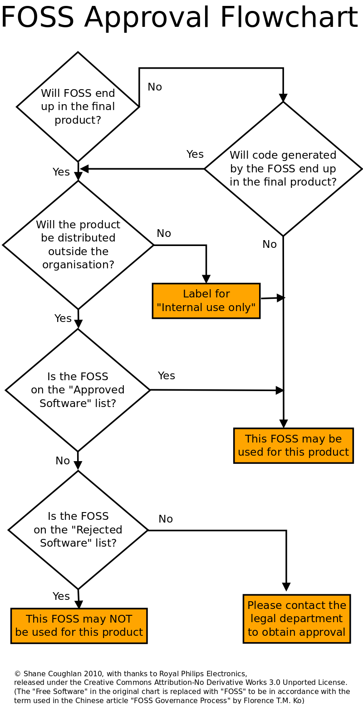

善用管理流程以妥善利用自由開源軟體加入產品開發

經過這二、三十年的發展，自由開源軟體 (Free and Open Source Software, FOSS) 在品質與數量上面均有大幅度的成長，近年來更是大舉被產業界取來進行商業利用，也因此被應用的層面愈來愈廣，但對於傳統上僅熟悉私有軟體 (proprietary software) 授權模式的商業公司而言，初接觸自由開源軟體不免會引發各式各樣的問題與困擾，例如：「是否可以在終端產品中嵌入自由開源軟體進行商業販售？」、「是否作為內部開發工具就沒有延申要提供程式原始碼 (Source Code) 的問題？」、「如何讓工程師快速了解授權內容，從第一線開始避免侵權利用？」。在國內，有些公司已設有專職人員來研究與處理上述的相關問題，不過就筆者所知，這樣的公司目前仍是少數，大部份的狀況是，面臨到自由開源軟體授權問題與困擾的產品工程師，必須肩負起閱讀授權條款、釐清授權義務規定、回覆客戶相關問題，以及研究如何實踐授權義務、讓客戶安心等等的責任，這使得工程師在原本的產品開發與既定的管理工作之外，又增加了研讀艱澀授權條文的工作，而可能導致心力分散、處於不堪負荷的狀態。這樣的現象挑戰著商業公司的管理階層：如何在內部深化應用自由開源軟體的同時，又能夠同步降低可能產生的風險與困擾？因應這樣的轉變與問題，國外許多公司均制定有自由開源軟體產品應用的管理流程，讓員工在利用自由開源軟體元件加速產品開發的同時，有一套制式的流程可以遵循，不過這樣的觀念在國內仍屬少見，因此本文將介紹一個簡化版的自由開源軟體核准流程，作為商業管理流程的範例，藉此向讀者說明善用管理流程所可能發揮的功效。
【自由開源軟體核准流程的運作介紹】

▲ 圖1 自由開源軟體核准流程圖
這個核准流程圖（註一）由五個問題的自我詢答以構成四種結果，從左邊一排開始，這些問題從上到下依序如下（註二）：
一、自由開源軟體的程式碼將會被保留到終端產品裡嗎？(Will FOSS end up in the final product?)
這個問題關乎自由開源軟體是如何被利用的，若答案為否的話，很有可能這個自由開源軟體只是被當作是產品開發工具，而僅在企業內部使用，如此，原則上就不會有相關的程式碼被散布到組織之外，所以在散布之後才會衍生的種種義務性規定將不會被開啟。但若此題答案為肯定的話，就必須進行第二題的檢測。
二、產品將會被散布到組織之外嗎？(Will the product be distributed outside of the organisation?)
若第一個問題的答案為肯定，表示產品中包含有自由開源軟體的程式碼，第二題問題的重點是，這個包含有自由開源軟體的產品有沒有「被散布出去」，因為若是產品有被散布到組織外的話，就會啟動自由開源軟體授權條款的各種義務性規定，此時散布的組織，就必須要注意散布產品的過程是否遵守授權條款的各項規定，例如散布 GPL-2.0 授權的自由開源軟體的時候，除了將軟體本身的原始碼提供給使用者之外，還必須要提供衍生部份的原始碼才可以，而這樣的義務規定可能與某些產品的販售向性不盡相合 。因此若第二題答案為肯定的話，就必須繼續進行第三題，來檢測這個自由開源軟體是否真的可以用於開發是項產品；而若此題答案為否定的話，這個自由開源軟體便可以被標示為「僅供內部使用 (internal use only)」，因為多數自由開源授權條款的義務性規定，皆不會僅在單純使用軟體時啟動，故確定不會再行散布此一自由開源軟體時，可以先行如此標示，若日後有再散布的需求和可能性，便再就其授權狀態來做細部考量。
三、自由開源軟體是在「核准軟體清單」上嗎？(Is the FOSS on the "Approved Software" list?)
配合這個核准流程圖，有個由公司主管、產品經理，與法務部門就公司產品販售向性，所預先擬定的「核准軟體清單」，在這個清單上面的自由開源軟體，工程師們便可以安心拿來開發產品，即使產品散布到組織之外，也不會引發與產品販售向性衝突的授權問題。因此若是走到第三題，並且答案為肯定的話，工程師們確定就可以利用這個自由開源軟體來開發產品 (This FOSS may be used for this product)，而不需要花費額外時間研究授權內容與進行個案判斷。
四、自由開源軟體是在「拒絕軟體清單」上嗎？(Is the FOSS on the "Rejected Software" list?)
若第三題的答案為否定，那麼就還要看看這個自由開源軟體是否被列在「拒絕軟體清單上面」。顧名思義，拒絕軟體清單就是一份工程師們不可以利用軟體的清單，在這份清單上的軟體一旦被利用到終端產品裡，非常有可能與產品販售向性產生衝突，並替組織帶來法律糾紛。因此若是軟體在拒絕軟體清單之列，工程師們就不可以將這個軟體用於開發是項產品 (This FOSS may NOT be used for this product)。
這邊值得注意的是，若是軟體既不在核准清單之列，也不在拒絕清單之列，那麼這個流程圖所導出的答案是：「請與法務部門聯繫取得核可！(Please contact the legal department to obtain approval)」這代表當一個自由開源軟體既不在核准清單、也不在拒絕清單，是該組織法務部門之前所沒有瀏覽過的授權方式，這個軟體的授權規定可能與產品販售向性不符，若是貿然利用，可能會引起法律糾紛，所以必須要由經由法務部門進行個案式的瀏覽與研究，確認沒有問題之後，工程師才可以將這個軟體應用到產品中。
五、透過自由開源軟體處理，而產生的額外程式碼將會被保留到終端產品裡嗎？(Will code generated by the FOSS end up in the final product?)
第五個問題其實是承接第一個問題而來。當第一個問題的答案為否定，一個自由開源軟體本身的程式碼不會被保留在產品裡，此時、並不完全代表利用這個軟體，便確定沒有授權義務性方面的問題，因為有些被當作開發工具的自由開源軟體，在執行過程中，可能會將已身一部份的程式碼植入至該開發程式裡，例如 GCC (GNU Compiler Collection) 在編譯的過程中，便會自動植入部份的程式碼至編譯成果裡，就解釋上來說、伴有其程式碼的編譯成果也有機會被認定為 GCC 的衍生程式，而必須一體適用 GPL 來向外授權，不過針對此點、GCC project 已清楚表示這種狀況適用其特別律定的 Runtime Library Exception（註三），使用者在編譯行為上，可以例外的不受到 GPL 授權條款的拘束，然而、並非所有的編譯或其他的自由開源軟體開發工具，都設有這樣的例外規定。所以、若是透過自由開源軟體處理，會產生額外的程式碼被保留到終端產品裡的話，此時這個被植入程式碼的產品專案，一樣必須要通過第二題以下的核准流程，工程師才可以利用這個自由開源軟體來開發產品。相反地，若是這個自由開源軟體並不會在產品中置入額外的程式碼，顯示這個軟體是單純的工具程式，那麼工程師便可以安心利用它來開發產品，而毋須擔心衍生授權義務性方面的爭議。
【適當的規劃導入將帶來長期的整體效益】
以上的核准流程圖僅為一個簡單的範例，以這份流程為基本架構，還可以有許多的調整變化，例如：若公司已經有專案開發的版本控制系統 (version control system)，便可將這個流程圖加以系統化，融入成為版本控制系統的部份功能，讓工程師在開發產品的同時，直接透過系統平台的驗證程序，來檢查是否可以使用所欲取用的自由開源軟體；又或者可以延伸流程圖上第三題的內容，讓工程師在利用自由開源軟體開發產品的同時，知曉有哪些聲明必須一同置入到產品中，以符合自由開源軟體授權規定的要求。諸如此類的調整或內容延伸，可以視公司與產品販售向性的不同，而有許多的變化，來讓產業界商業化運用自由開源軟體時，能夠以更為便利而有效率的方式來進行。
不過行文至此，筆者並不諱言，國內多數公司現階段在規劃與導入這樣一套管理流程上有其難度，因為要建置管理流程基礎的第一步，便是得了解自由開源軟體授權條款的相關內容，才可以規劃出適合公司產品販售向性的軟體清單、核准流程，或者是其他延伸的管理程序，不同販售向性的產品也可能無法共用同一份清單與流程，這些了解與規劃的過程都必須投入相當的人力與時間。然而！若是應用自由開源軟體來開發公司產品，已經是一個不能完全避免的選項，那麼制定適當的流程，以便利工程師與聘僱員工來認識並利用自由開源軟體，則將是一條不可避免的道路，因為這樣的流程不但可以省卻工程師身兼法務的窘境，進一步透過了解、規劃的過程，將可以強化公司成員對於自由開源軟體的正確認知，有助於活用自由開源軟體，同時降低未來所可能衍生的法律風險。因此從整體來看，投入一定期間進行適當規劃以導入管理流程，將會對產業界在自由開源軟體的長期利用上，帶來整體的效益與幫助。
Acknowledgement: With thanks to Royal Philips Electronics, Shane Coughlan and other anonymous contributors for making efforts to release the chart under Creative Commons license to the public.
註一：這個核准流程圖的出處：Shane Coughlan, presentation slide "Licensing Compliance as Business Intelligence", 2010/05/11, p. 18, licensed under CC-BY-ND 3.0 Unported License, available at: https://www.openfoundry.org/slides-download/cat_view/35---/330-2010/356-0511。此核准流程圖原為荷蘭飛利浦公司 (Royal Philips Electronics) 內部管理自由開源軟體流程的一部份，經調整簡化後成為現在這個版本的基礎。自由軟體鑄造場於 2010 年邀請歐洲自由軟體基金會 (Free Software Foundation Europe, FSFE) 資深顧問 Shane Coughlan 來台演講，Coughlan 先生略為調整流程圖中的用語後，用在演講簡報中，並且採用「創用CC－姓名標示－禁止改作 3.0 未本地化版本」授權條款釋出此圖，也就是本文所採用的這個版本。感謝荷蘭飛利浦公司、Shane Coughlan 以及調整本流程圖以利釋出的貢獻者！
註二：Shane Coughlan 先生原核准流程圖中的英文採用「Free Software」一詞，不過由於本文的中文用詞統一採用「自由開源軟體 (Free and Open Source Software, FOSS)」，因此在解說流程圖的部份，改以「FOSS」一詞來置換原圖之「Free Software」，特此說明。
註三：進一步的說明資訊，可參照 GNU Project 對 GCC Runtime Library Exception 的正式說明頁面：https://www.gnu.org/licenses/gcc-exception.html。